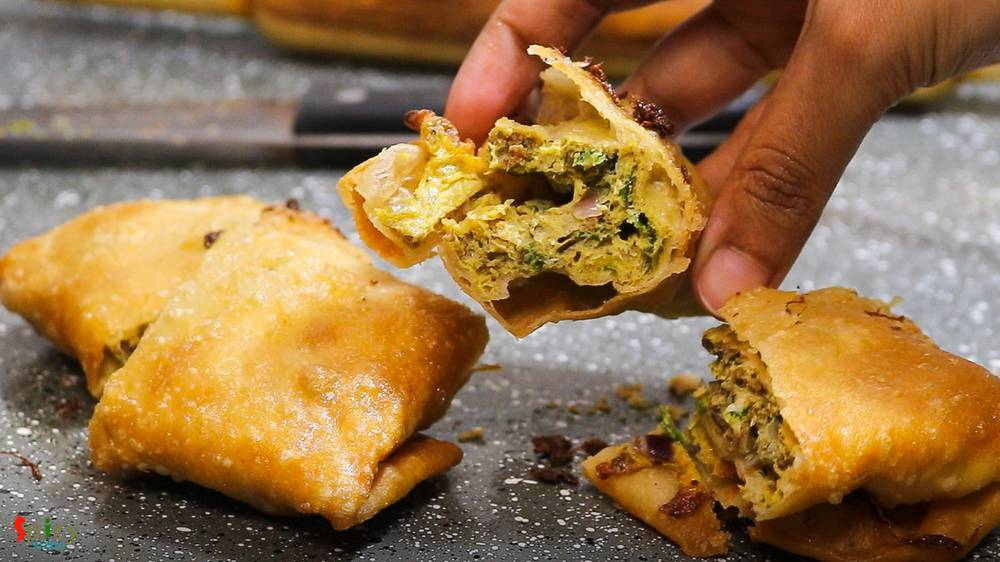
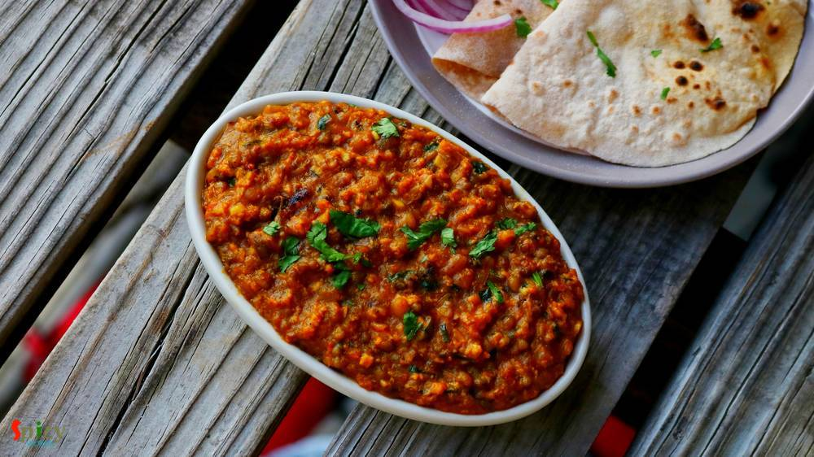
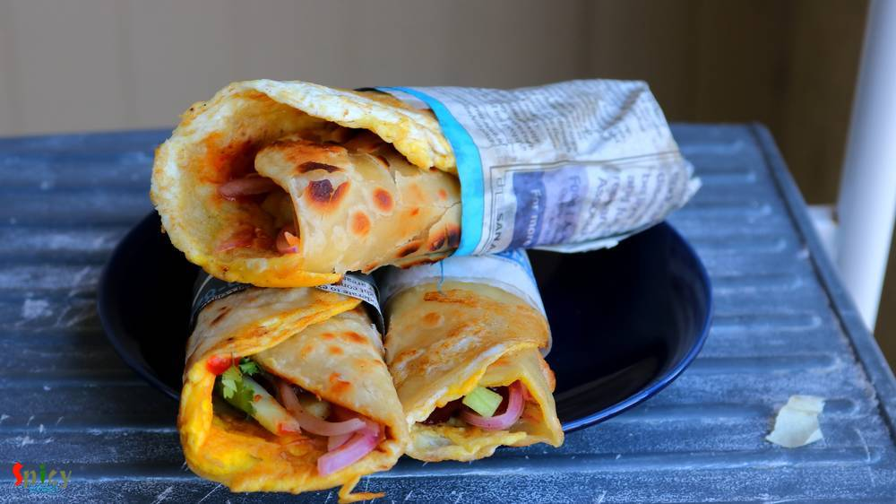
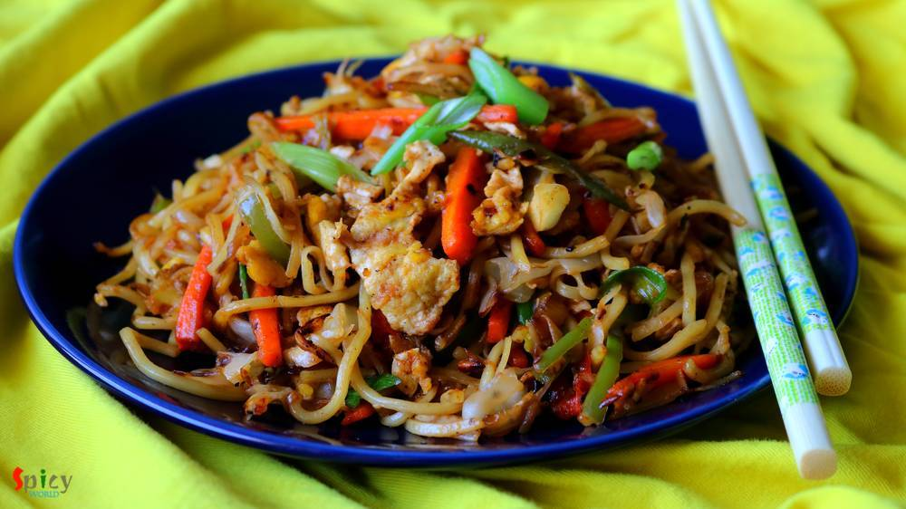
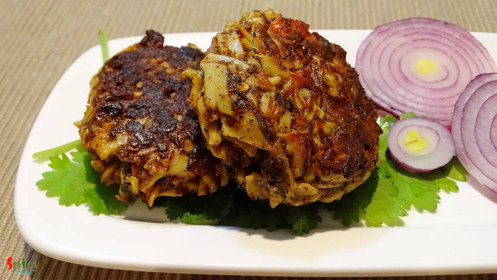

Simple and Easy Recipes
Posts on 'egg'

Nonveg Recipe
Sep 19, 2019
Cheese stuffed Chicken balls are very delicious starter item. From younger to elder everybody love these balls. They have crispy coating outside and gooey cheese inside .. treat to your mouth! You can use any cheese of you choice. For this recipe I used ground cornflakes instead of breadcrumbs to coat the balls. You can definitely use breadcrumbs. Recipe of chicken cheese balls is very easy. If yo ...


Nonveg Recipe
Apr 26, 2019
Anything scrambled means Bhurji in India. Be it egg, paneer or nutrela, they all taste delicious. In this Egg Bhurji recipe first we will make a masala with onion and tomato, then eggs will be scrambled with that. Anda bhurji has no gravy but it is soft and juicy enough to pair with phulkas (roti) or pav (bread). You can make very good sandwich with them also. Try this recipe in your kitchen and l ...

Nonveg Recipe
Sep 24, 2015
Yesterday morning during surfing net I saw an eyecatching picture of Chicken Dak Bunglow curry. It made me doing immediate preparation for dinner.Trust me, after dinner there was literally nothing in our plate except bones:-) It became so damn tasty ! I once ate the mutton version of this curry. That was also finger licking delicious, will upload that soon. Do give this recipe a try and I am sure ...

Nonveg Recipe
Feb 26, 2019
Dalna means a curry which contains potato with other vegetables or protein. But potato is a must for Dalna. Some also call it Torkari. Summer is coming and so is sweaty tiredness with it. If you don't want to spend long time in the kitchen, no worries! I have a solution. Dimer Dalna or Egg and Potato Curry is the most simple and easy recipe which can easily feed a crowd. Anyone can enjoy a good, t ...

Nonveg Recipe
Jan 31, 2019
Mughlai Keema Paratha is a very famous street food which has another name Keema Baida Roti. In Kolkata we call them 'moglai porota'. I made these parathas exactly like street style with minced meat, but you can skip that Keema part and keep the rest of the recipe same. The process is a bit lengthy but it is worth trying. I made dry potato curry along with mughlai paratha because these two goes ver ...

Nonveg Recipe
Jan 28, 2019
Chicken Hot and Sour Soup is one of the popular soup variety from Chinese cuisine. In this silky, spicy, sour broth you can add almost everything like chicken, egg, tofu and many kinds of vegetable. Hot and sour soup tastes best (especially) during winter or monsoon and it can also uplift your taste buds. Try this easy recipe in your kitchen and let me know how it turned out for you.

Nonveg Recipe
Jan 21, 2019
Kids are always excited about their lunchbox. My mom used to make this savory pancake in my lunchbox and I loved them. You can also stuff the savory pancakes with any type of dry curry. Yesterday I made them in breakfast and they came out delicious. I mentioned 'savory' because usually we eat 'pancake' with sweet maple syrup but these can be serve with ketchup or chili sauce. Try this at your home ...

Nonveg Recipe
Jan 1, 2019
In Bengal, one of the famous street food is 'dimer devil'. Dim means Egg in Bengal. Nowadays, 'egg chop' is also served in many party, get to gather and occasions. To make this you have to wrap a boiled egg with spicy potato filling, roll them in bread crumbs and then deep fry them. In college canteen or any ceremony, sometimes the cook mix some minced mutton (keema) with the spicy potato, the tas ...
")
Nonveg Recipe
Dec 14, 2018
I am a very fast food loving person. During college life there was hardly any day I skipped fast food. Be it simple 'phuchka' (panipuri) or heaviest roll, I was always in ! Surprisingly after my marriage I have taken a lot of control over my food habit, I have become more conscious now. But that doesn't mean I can't eat fast food once in a week .. hell I can ! ?? When I made these yummy 'egg chi ...

Nonveg Recipe
Oct 8, 2018
Egg fried rice is a delicious variety of Indo-Chinese fried rices. It's a quick stir fry of rice, veggies and eggs with some seasonings and sauces. The best way to make Egg fried rice is by using left over rice and cooking on high flame, like many Chinese dishes. You can have this fried rice on its own or it can be paired with any manchurian gravy or chili chicken or chili paneer.

Nonveg Recipe
Oct 31, 2018
Egg Malai Curry is a Bengali delicacy, in which hard boiled eggs are cooked in a creamy milk based sauce. Dimer Malaikari is a very rich and mild curry which goes best with plain steamed rice or ruti. This is a kid friendly recipe, adjust the heat level according to their taste. They will enjoy this preparation to the core, I can vouch for that. If your family love egg, then you have to give this ...
")
Nonveg Recipe
Aug 23, 2018
I am a really big fan of indo-chinese food, whereas 'he' prefers mughlai or authentic bengali food more. Before marriage, I used to find excuses to go to any restaurant and eat 'chilli chicken' with rumali roti. I know what are you guys thinking. But don't know why I love this combo so much. In every street of Kolkata you can find various indo-chinese restaurants. I mentioned Kolkata style because ...

Nonveg Recipe
Dec 4, 2018
'Torka-ruti' has always been a great favorite of mine. It's great with any type of bread like naan, tandoori roti, lachha paratha ... but with plain chapati / roti, the pair becomes heavenly. I have already posted some recipes on 'dhaba style' but the most popular and well known recipe is 'dim torka' or 'whole moong daal with scrambled egg'. When they serve this dish with raw onion chunks, green c ...

Nonveg Recipe
Sep 7, 2018
This is one of my favorite midweek curry so far. When you don't want to spend too much time in kitchen but still want to have something yummy, then this spicy egg (also called anda) curry is life saver. As you all know 'kosha' means slow cooking with oil and spices. I know what you are thinking - 'slow cooking' on weekdays? When the main ingredient is egg, then yes you can make this Egg Kosha in a ...

Nonveg Recipe
Jul 12, 2018
One of the famous street food from Kolkata is 'egg roll'. A flaky paratha, a layer of egg and lots of veggies with sauces will never fail to satisfy your appetite. There are so many varities of roll like 'egg-chicken roll', 'mutton roll', 'paneer roll', 'egg-mutton roll' etc. They all are very yummy and easy to make. Try this in your kitchen and let me know about your story.

Nonveg Recipe
Jun 14, 2018
This easy noodles recipe is sure to make your lunch / dinner much better. With egg and veggies the noodles become more addictive and best option for lunch boxes. It used to be my frequent tiffin during school life. You can also add chicken and shrimp to this dish. I have 'Mix Noodles' recipe already in my blog. Do try this delicious recipe in your kitchen and let me know how it turned out for you.

Nonveg Recipe
Apr 17, 2018
Fried rice is everybody's favourite .. agree or not ? You can add whatever ingredient you have in your fridge and thats what happened with me. I had few veggies laying around, so thought why not throw everything with some rice. Best part of this idea - added some chicken strips. After around 10 minutes of stir frying a good wholesome Chicken fried rice was waiting for me to make my soul and tummy ...
")
Nonveg Recipe
Jun 14, 2016
Who doesn't crave for yummy snacks in the evening with some cold drinks during summer ?? I guess everybody does. Summer or winter doesn't matter ... weekend evenings are meant for some awesome starters ! After few trials I finally created the exact taste of Kolkata's one of the famous street food - 'kobiraji cutlet'. Kobiraji means coverage or lace like texture, which you can create with beaten eg ...
May 20, 2016
Every place in this world has their own tea stalls and also some unique dishes. You can never match the taste of tea stall's food with big restaurant's food ... a huge difference ! One of the famous item of those stalls in India is 'toast'. You can get so many types of toast from them like 'butter toast', 'french toast', 'plain toast' etc. I love to eat 'dim pauruti' or in fancy words 'savory fren ...
 Curry")
Nonveg Recipe
May 2, 2016
There are some recipes which are classics. They don't need any upgradation. 'Kolhapuri Egg Curry' is from this category. This is a famous Maharashtrian dish in which boiled eggs are cooked into the 'kolhapuri' gravy ... it tastes million bucks ! This curry is rich + hot in taste and goes perfectly with steamed rice or plain chapatis. You can keep a large batch of this Kolhapuri masala in fridge fo ...

Veg Recipe
Apr 13, 2016
This is a very typical Bengali veg dish which you can only enjoy with steamed rice. We, bongs, have a very strong connection with 'posto' / poppy seeds and 'shorshe' or mustard seeds. We can creat so many delicious items with these two simple things. Now, 'he' is not a fan of eggplant, except fried version, to feed him this particular vegetable is really painful. I always have to make special dish ...

Nonveg Recipe
Feb 25, 2016
This is my third successful cake on first attempt. To make 'marble cake' you will need two flavours. I have used most common two flavours - vanilla and chocolate. You can use any flavours of your choice. The texture of this cake impressed me a lot. Just love to bite those chocolate swirls with vanilla sponge.
")
Nonveg Recipe
Feb 22, 2016
I am a beginner in the baking world. 'Vanilla sponge Cake' without oil and butter is my second successful cake. The taste was quite good and I was really impressed by its texture. In this sponge cake the key ingredient is egg. Egg whites will make this cake spongy and fluffy. You can enjoy it as snack or with a cup of tea.

Nonveg Recipe
Jan 27, 2016
We both are not frequent egg eaters, but when we do, we try to make the curry yumm yumm !! One of our favourite egg curry is 'sorshe dim posto'- traditional bengali dish. 'Sorshe' means mustard seeds and 'posto' means poppy seeds. Lunch dishes always plays a big part in Bengali cuisine. There are several typically bengali dishes which you can only enjoy as lunch with steamed rice and may be after ...

Nonveg Recipe
Jan 21, 2016
Almost every one has a slight weakness over chinese food. Taste and flavour of their food is totally unique. In Kolkata, many street food joints sell chinese food like various types of chowmin, chilli chicken, manchurian, lollipops etc. They all tastes really good. Today I am sharing the delicious recipe of 'mix Hakka noodles'. The dish has lots of vegetables, chicken and also egg, that's why the ...

Nonveg Recipe
Jan 5, 2016
In India I never had crab, because they always scares me. After coming to USA, oneday we went for dinner in a restaurant. 'He' already ordered 'crab cake' as appetizer when I went to restroom. I really got upset after returning because I had no idea that crab cake is made of crab meat only. But when they served two cakes in a plate, the platter really impressed me. The taste was phenomenal and mos ...

Nonveg Recipe
Dec 23, 2015
'Dakbanglow' means roadside resting house. Travelers used to take rest or halt for a night in those houses. The care taker of those 'bunglow's cooked this curry for their guests. Nowadays these kind of recipes are almost lost but in a few restaurants in Kolkata you can still find this dish. This is a typical bengali recipe and the tastiest dish ever. Once I ate this curry in my aunt's house and I ...
")
Veg Recipe
Nov 15, 2015
'Khatta' means tangy/sour and 'baingan' means eggplant/begun. Most probably this dish is from Kashmiri cuisin. I do not have much knowledge about this cuisin but I can assure you that you will never forget this eggplant recipe. Last wednesday we both wanted to eat veg in dinner and I had an eggplant(begun) in my fridge. So, I googled for some spicy veg recipes made with eggplant, and my eyes got s ...

Nonveg Recipe
Oct 16, 2015
We all love to eat omelet. My grandma used to make this dish with her love and care. That is why it always turned out so tasty. Today I am sharing this recipe with little changes. Please make this at your home.

Nonveg Recipe
Oct 7, 2015
In India we all love "dhaba" foods and also we love eggs. Mostly their dishes are spicy. So, today I am sharing this spicy dish with you. Please try this at your home.

Nonveg Recipe
Sep 16, 2015
In India we make chinese food with some own variations, that's why we call it 'indo-chinese'. Egg chicken chowmin is very famous street food from kolkata. You can also get veg chowmin, prawn chowmin, only chicken chowmin etc. But my favourite is this one. Try this at your home, you will get the exact taste of street food.